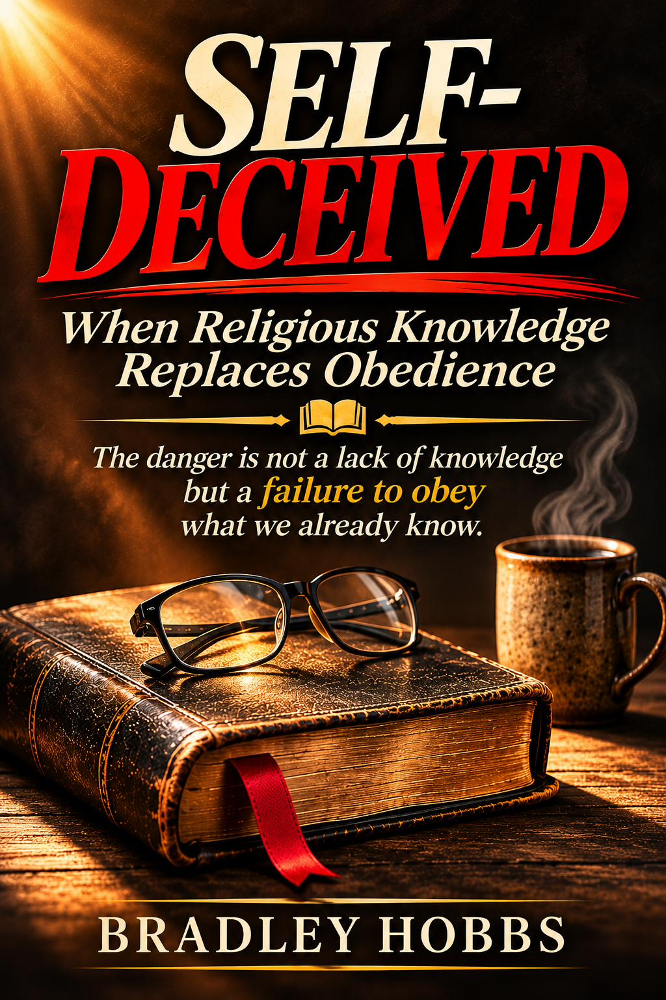

SELF-DECEIVED
When Religious Knowledge Replaces Obedience
James 1:22 warns us not to hear the Word without practicing what we have received. This book explores the quiet ways religious familiarity can become false confidence and how Scripture calls us back to a life of response.
Across ten chapters, Bradley Hobbs examines the difference between understanding and submission, the ways the heart rationalizes, the work of conviction and repentance, the conduct and speech shaped by Scripture, integrity in unseen choices, and the freedom and blessing of continuing in the Word.
Rather than directing the reader toward the failures of others, the book invites honest personal examination before God. The aim is not condemnation, but a renewed willingness to receive truth, take responsibility, and live according to what has been heard.